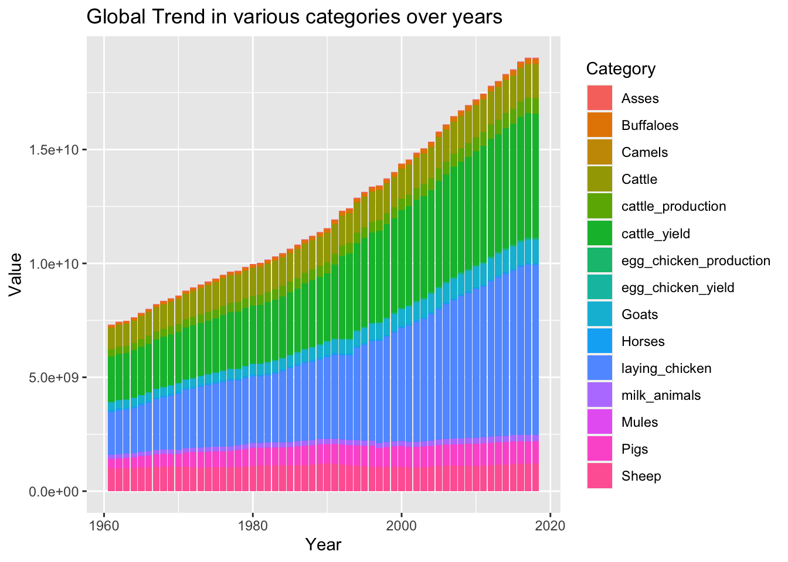
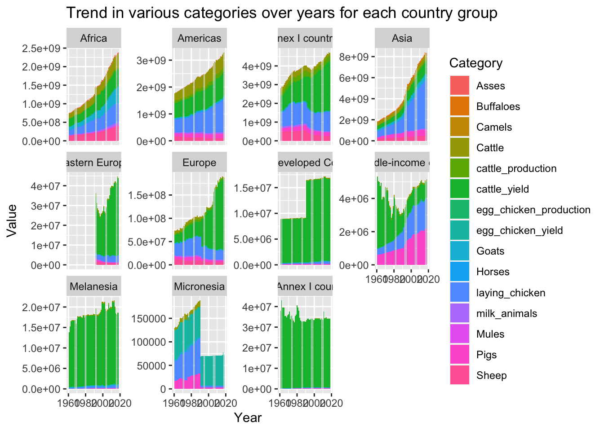
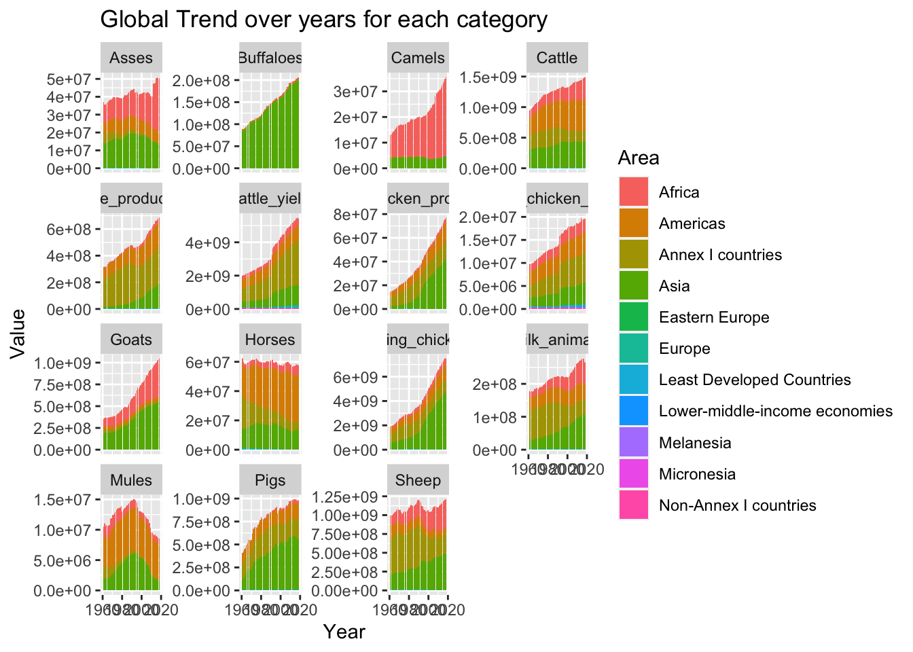

Code
library(tidyverse)
library(ggplot2)
knitr::opts_chunk$set(echo = TRUE, warning=FALSE, message=FALSE)Srujan Kagitala
July 1, 2023
Today’s challenge is to:
(be sure to only include the category tags for the data you use!)
Read in one (or more) of the following datasets, using the correct R package and command.
I will doing some analysis around FAOSTAT datasets.
# A tibble: 6 × 14
`Domain Code` Domain `Area Code` Area `Element Code` Element `Item Code`
<chr> <chr> <dbl> <chr> <dbl> <chr> <dbl>
1 QL Livestock … 2 Afgh… 5318 Milk A… 882
2 QL Livestock … 2 Afgh… 5420 Yield 882
3 QL Livestock … 2 Afgh… 5510 Produc… 882
4 QL Livestock … 2 Afgh… 5318 Milk A… 882
5 QL Livestock … 2 Afgh… 5420 Yield 882
6 QL Livestock … 2 Afgh… 5510 Produc… 882
# ℹ 7 more variables: Item <chr>, `Year Code` <dbl>, Year <dbl>, Unit <chr>,
# Value <dbl>, Flag <chr>, `Flag Description` <chr># A tibble: 6 × 7
`Country Group Code` `Country Group` `Country Code` Country `M49 Code`
<dbl> <chr> <dbl> <chr> <chr>
1 5100 Africa 4 Algeria 012
2 5100 Africa 7 Angola 024
3 5100 Africa 53 Benin 204
4 5100 Africa 20 Botswana 072
5 5100 Africa 233 Burkina Faso 854
6 5100 Africa 29 Burundi 108
# ℹ 2 more variables: `ISO2 Code` <chr>, `ISO3 Code` <chr># A tibble: 6 × 14
`Domain Code` Domain `Area Code` Area `Element Code` Element `Item Code`
<chr> <chr> <dbl> <chr> <dbl> <chr> <dbl>
1 QL Livestock … 2 Afgh… 5313 Laying 1062
2 QL Livestock … 2 Afgh… 5410 Yield 1062
3 QL Livestock … 2 Afgh… 5510 Produc… 1062
4 QL Livestock … 2 Afgh… 5313 Laying 1062
5 QL Livestock … 2 Afgh… 5410 Yield 1062
6 QL Livestock … 2 Afgh… 5510 Produc… 1062
# ℹ 7 more variables: Item <chr>, `Year Code` <dbl>, Year <dbl>, Unit <chr>,
# Value <dbl>, Flag <chr>, `Flag Description` <chr># A tibble: 6 × 14
`Domain Code` Domain `Area Code` Area `Element Code` Element `Item Code`
<chr> <chr> <dbl> <chr> <dbl> <chr> <dbl>
1 QA Live Anima… 2 Afgh… 5111 Stocks 1107
2 QA Live Anima… 2 Afgh… 5111 Stocks 1107
3 QA Live Anima… 2 Afgh… 5111 Stocks 1107
4 QA Live Anima… 2 Afgh… 5111 Stocks 1107
5 QA Live Anima… 2 Afgh… 5111 Stocks 1107
6 QA Live Anima… 2 Afgh… 5111 Stocks 1107
# ℹ 7 more variables: Item <chr>, `Year Code` <dbl>, Year <dbl>, Unit <chr>,
# Value <dbl>, Flag <chr>, `Flag Description` <chr>FAOSTAT provides data on cattle_dairy, country_groups, egg_chicken and livestock across the world.
FAOSTAT_cattle_dairy.csv - This dataset contains information on number of milk producing animals, yield and production from year 1961 to 2018 across the world. The information recorded per observation are Domain Code, Domain, Area Code, Area, Element Code, Element, Item Code, Item, Year Code, Year, Unit, Value, Flag, Flag Description. There are atmost 3 observations per country every year. The total observations recorded are 36449.
FAOSTAT_country_groups.csv - This dataset contains information on how countries are grouped and their internationally accepted codes. There is information about 277 countries. Each country is a part of multiple country groups. So, there are a total of 1943 data points.
FAOSTAT_egg_chicken.csv - This dataset contains information on number of laying chicken, yield and production from year 1961 to 2018 across the world. The information recorded per observation are Domain Code, Domain, Area Code, Area, Element Code, Element, Item Code, Item, Year Code, Year, Unit, Value, Flag, Flag Description. There are atmost 3 observations per country every year. The total observations recorded are 38170.
FAOSTAT_livestock.csv - This dataset contains information on quantity of various livestock from year 1961 to 2018 across the world. The information recorded per observation are Domain Code, Domain, Area Code, Area, Element Code, Element, Item Code, Item, Year Code, Year, Unit, Value, Flag, Flag Description. There are atmost 9 observations per country every year. The total observations recorded are 82116.
I want to analyse variations in cattle, egg_chicken and livestock details among various country groups over the years. So, we have to preserve “Area code”, “Area”, “Element”, “Item”, “Year Code”, “Value” in each of the cattle, egg_chicken and livestock dataset. All the other columns can be dropped for this analysis. Also, only one country group per country is considered for the ease of analysis. “Item” column in cattle and egg_chicken datasets and “Element” column in livestock can be dropped as they have unique values and they are not necessary for the analysis.
For each of the cattle, livestock and egg_chicken dataset, we pivot_wider to record only one observation per country. Also, categorical variables are converted to factors to get better insights on view of the summary. We can also convert all the columns that represent “code” to character format (but not doing this currently). Also, we need to have consistent units of measurement. For this analysis, the units are as follows
#Tidy cattle dataset
cattle_data_tidy <- cattle_data %>%
select(`Area Code`, Area, `Year Code`, Element, Value) %>%
mutate_if(is.character, as.factor) %>%
pivot_wider(names_from=Element, values_from=Value) %>%
mutate(`Yield` = `Yield`*1000) %>%
rename(`milk_animals` = `Milk Animals`,
`cattle_yield` = `Yield`,
`cattle_production` = `Production`)
#Tidy egg_chicken dataset
egg_chicken_data_tidy <- egg_chicken_data %>%
select(`Area Code`, Area, `Year Code`, Element, Value) %>%
mutate_if(is.character, as.factor) %>%
pivot_wider(names_from=Element, values_from=Value) %>%
mutate(`Laying` = `Laying`*1000) %>%
rename(`laying_chicken` = `Laying`,
`egg_chicken_yield` = `Yield`,
`egg_chicken_production` = `Production`)
#Tidy livestock dataset
livestock_data_tidy <- livestock_data %>%
select(`Area Code`, Area, `Year Code`, Item, Value) %>%
mutate_if(is.character, as.factor) %>%
pivot_wider(names_from=Item, values_from=Value)
#Tidy country_groups dataset
country_groups_tidy <- country_groups_data[
!duplicated(country_groups_data$`Country Code`),] %>%
select(`Country Group`, `Country Code`) %>%
mutate_if(is.character, as.factor)
head(cattle_data_tidy)# A tibble: 6 × 6
`Area Code` Area `Year Code` milk_animals cattle_yield cattle_production
<dbl> <fct> <dbl> <dbl> <dbl> <dbl>
1 2 Afghanist… 1961 700000 5000000 350000
2 2 Afghanist… 1962 700000 5000000 350000
3 2 Afghanist… 1963 780000 5128000 400000
4 2 Afghanist… 1964 780000 5128000 400000
5 2 Afghanist… 1965 870000 5172000 450000
6 2 Afghanist… 1966 960000 5208000 500000# A tibble: 6 × 6
`Area Code` Area `Year Code` laying_chicken egg_chicken_yield
<dbl> <fct> <dbl> <dbl> <dbl>
1 2 Afghanistan 1961 4000000 25000
2 2 Afghanistan 1962 4400000 25000
3 2 Afghanistan 1963 4600000 25000
4 2 Afghanistan 1964 4800000 25000
5 2 Afghanistan 1965 5200000 24615
6 2 Afghanistan 1966 5500000 24000
# ℹ 1 more variable: egg_chicken_production <dbl># A tibble: 6 × 12
`Area Code` Area `Year Code` Asses Camels Cattle Goats Horses Mules Sheep
<dbl> <fct> <dbl> <dbl> <dbl> <dbl> <dbl> <dbl> <dbl> <dbl>
1 2 Afgha… 1961 1.3 e6 250000 2.90e6 4.20e6 276841 20000 1.80e7
2 2 Afgha… 1962 8.52e5 279910 3.20e6 4.09e6 245850 20460 1.81e7
3 2 Afgha… 1963 1.00e6 349405 3.30e6 3.8 e6 263265 22600 1.85e7
4 2 Afgha… 1964 1.15e6 325000 3.35e6 3.5 e6 291000 24700 1.9 e7
5 2 Afgha… 1965 1.3 e6 300000 3.4 e6 3.20e6 320000 26800 1.96e7
6 2 Afgha… 1966 1.20e6 300000 3.60e6 3.20e6 278000 23000 2.06e7
# ℹ 2 more variables: Buffaloes <dbl>, Pigs <dbl># A tibble: 6 × 2
`Country Group` `Country Code`
<fct> <dbl>
1 Africa 4
2 Africa 7
3 Africa 53
4 Africa 20
5 Africa 233
6 Africa 29After pre processing,
Number of observations in cattle dataset= 12170 Number of columns in cattle dataset= 6
Number of observations in egg_chicken dataset= 12856 Number of columns in egg_chicken dataset= 6
Number of observations in livestock dataset= 13347 Number of columns in livestock dataset= 6
Number of observations in country_groups dataset= 277 Number of columns in country_groups dataset= 2
livestock, egg_chicken and cattle are joined based on “Area Code” and “Year Code”. Then we pivot longer to represent each measurement column as category. This dataframe is merged on to country_groups_tidy to create the final dataset for analysis.
#Full join cattle and egg_chicken
cattle_egg <- full_join(livestock_data_tidy,
egg_chicken_data_tidy,
by = c("Area Code", "Year Code")) %>%
select(-`Area.y`) %>%
rename(`Area` = `Area.x`)
#Full join livestock, cattle and egg_chicken
cattle_egg_stock <- full_join(cattle_egg,
cattle_data_tidy,
by = c("Area Code", "Year Code")) %>%
select(-`Area.y`) %>%
rename(`Area` = `Area.x`)
#Inner join country and cattle_egg_stock
country_cattle_egg_stock <- inner_join(country_groups_tidy,
cattle_egg_stock,
by = c("Country Code" = "Area Code")) %>%
select(-Area)
#Pivot longer to get one observation per row per country.
final_data <- country_cattle_egg_stock %>%
pivot_longer(c("Asses", "Camels", "Cattle", "Goats", "Horses", "Mules",
"Sheep","Buffaloes", "Pigs", "laying_chicken",
"egg_chicken_yield", "egg_chicken_production", "milk_animals",
"cattle_yield", "cattle_production"),
names_to = "category",
values_to = "value")
head(final_data)# A tibble: 6 × 5
`Country Group` `Country Code` `Year Code` category value
<fct> <dbl> <dbl> <chr> <dbl>
1 Africa 4 1961 Asses 315000
2 Africa 4 1961 Camels 154000
3 Africa 4 1961 Cattle 611000
4 Africa 4 1961 Goats 1946000
5 Africa 4 1961 Horses 137000
6 Africa 4 1961 Mules 175000No of columns in final dataset = 5 No of observations in final dataset = 177180

ggplot(data = final_data, aes(x= `Year Code`, y = value)) +
geom_bar(stat = "identity",
mapping = aes(fill = category),
position = "stack") +
facet_wrap(~`Country Group`, scales = "free_y") +
labs(title ="Trend in various categories over years for each country group",
y = "Value",
x = "Year",
fill = "Category")

---
title: "Challenge 8 - FAOSTAT"
author: "Srujan Kagitala"
description: "Joining Data"
date: "7/1/2023"
format:
html:
toc: true
code-fold: true
code-copy: true
code-tools: true
categories:
- challenge_8
- faostat
- srujan_kagitala
---
```{r}
#| label: setup
#| warning: false
#| message: false
library(tidyverse)
library(ggplot2)
knitr::opts_chunk$set(echo = TRUE, warning=FALSE, message=FALSE)
```
## Challenge Overview
Today's challenge is to:
1) read in multiple data sets, and describe the data set using both words and any supporting information (e.g., tables, etc)
2) tidy data (as needed, including sanity checks)
3) mutate variables as needed (including sanity checks)
4) join two or more data sets and analyze some aspect of the joined data
(be sure to only include the category tags for the data you use!)
## Read in data
Read in one (or more) of the following datasets, using the correct R package and command.
- faostat ⭐⭐
I will doing some analysis around FAOSTAT datasets.
```{r}
#| label: read
cattle_data <- read_csv("_data/FAOSTAT_cattle_dairy.csv")
country_groups_data <- read_csv("_data/FAOSTAT_country_groups.csv")
egg_chicken_data <- read_csv("_data/FAOSTAT_egg_chicken.csv")
livestock_data <- read_csv("_data/FAOSTAT_livestock.csv")
head(cattle_data)
head(country_groups_data)
head(egg_chicken_data)
head(livestock_data)
```
### Briefly describe the data
FAOSTAT provides data on cattle_dairy, country_groups, egg_chicken and livestock across the world.
1. FAOSTAT_cattle_dairy.csv - This dataset contains information on number of milk producing animals, yield and production from year 1961 to 2018 across the world. The information recorded per observation are `r names(cattle_data)`. There are atmost `r length(unique(cattle_data$Element))` observations per country every year. The total observations recorded are `r nrow(cattle_data)`.
2. FAOSTAT_country_groups.csv - This dataset contains information on how countries are grouped and their internationally accepted codes. There is information about `r length(unique(country_groups_data$Country))` countries. Each country is a part of multiple country groups. So, there are a total of `r nrow(country_groups_data)` data points.
3. FAOSTAT_egg_chicken.csv - This dataset contains information on number of laying chicken, yield and production from year 1961 to 2018 across the world. The information recorded per observation are `r names(egg_chicken_data)`. There are atmost `r length(unique(cattle_data$Element))` observations per country every year. The total observations recorded are `r nrow(egg_chicken_data)`.
4. FAOSTAT_livestock.csv - This dataset contains information on quantity of various livestock from year 1961 to 2018 across the world. The information recorded per observation are `r names(livestock_data)`. There are atmost `r length(unique(livestock_data$Item))` observations per country every year. The total observations recorded are `r nrow(livestock_data)`.
## Tidy Data (as needed)
I want to analyse variations in cattle, egg_chicken and livestock details among various country groups over the years. So, we have to preserve "Area code", "Area", "Element", "Item", "Year Code", "Value" in each of the cattle, egg_chicken and livestock dataset. All the other columns can be dropped for this analysis. Also, only one country group per country is considered for the ease of analysis. "Item" column in cattle and egg_chicken datasets and "Element" column in livestock can be dropped as they have unique values and they are not necessary for the analysis.
For each of the cattle, livestock and egg_chicken dataset, we pivot_wider to record only one observation per country. Also, categorical variables are converted to factors to get better insights on view of the summary. We can also convert all the columns that represent "code" to character format (but not doing this currently). Also, we need to have consistent units of measurement. For this analysis, the units are as follows
1. number - Head,
2. yield - 100mg/An,
3. production - tonnes.
```{r}
#| label: tidy
#Tidy cattle dataset
cattle_data_tidy <- cattle_data %>%
select(`Area Code`, Area, `Year Code`, Element, Value) %>%
mutate_if(is.character, as.factor) %>%
pivot_wider(names_from=Element, values_from=Value) %>%
mutate(`Yield` = `Yield`*1000) %>%
rename(`milk_animals` = `Milk Animals`,
`cattle_yield` = `Yield`,
`cattle_production` = `Production`)
#Tidy egg_chicken dataset
egg_chicken_data_tidy <- egg_chicken_data %>%
select(`Area Code`, Area, `Year Code`, Element, Value) %>%
mutate_if(is.character, as.factor) %>%
pivot_wider(names_from=Element, values_from=Value) %>%
mutate(`Laying` = `Laying`*1000) %>%
rename(`laying_chicken` = `Laying`,
`egg_chicken_yield` = `Yield`,
`egg_chicken_production` = `Production`)
#Tidy livestock dataset
livestock_data_tidy <- livestock_data %>%
select(`Area Code`, Area, `Year Code`, Item, Value) %>%
mutate_if(is.character, as.factor) %>%
pivot_wider(names_from=Item, values_from=Value)
#Tidy country_groups dataset
country_groups_tidy <- country_groups_data[
!duplicated(country_groups_data$`Country Code`),] %>%
select(`Country Group`, `Country Code`) %>%
mutate_if(is.character, as.factor)
head(cattle_data_tidy)
head(egg_chicken_data_tidy)
head(livestock_data_tidy)
head(country_groups_tidy)
```
After pre processing,
Number of observations in cattle dataset= `r nrow(cattle_data_tidy)`
Number of columns in cattle dataset= `r ncol(cattle_data_tidy)`
Number of observations in egg_chicken dataset= `r nrow(egg_chicken_data_tidy)`
Number of columns in egg_chicken dataset= `r ncol(egg_chicken_data_tidy)`
Number of observations in livestock dataset= `r nrow(livestock_data_tidy)`
Number of columns in livestock dataset= `r ncol(cattle_data_tidy)`
Number of observations in country_groups dataset= `r nrow(country_groups_tidy)`
Number of columns in country_groups dataset= `r ncol(country_groups_tidy)`
## Join Data
livestock, egg_chicken and cattle are joined based on "Area Code" and "Year Code". Then we pivot longer to represent each measurement column as category. This dataframe is merged on to country_groups_tidy to create the final dataset for analysis.
```{r}
#| label: join
#Full join cattle and egg_chicken
cattle_egg <- full_join(livestock_data_tidy,
egg_chicken_data_tidy,
by = c("Area Code", "Year Code")) %>%
select(-`Area.y`) %>%
rename(`Area` = `Area.x`)
#Full join livestock, cattle and egg_chicken
cattle_egg_stock <- full_join(cattle_egg,
cattle_data_tidy,
by = c("Area Code", "Year Code")) %>%
select(-`Area.y`) %>%
rename(`Area` = `Area.x`)
#Inner join country and cattle_egg_stock
country_cattle_egg_stock <- inner_join(country_groups_tidy,
cattle_egg_stock,
by = c("Country Code" = "Area Code")) %>%
select(-Area)
#Pivot longer to get one observation per row per country.
final_data <- country_cattle_egg_stock %>%
pivot_longer(c("Asses", "Camels", "Cattle", "Goats", "Horses", "Mules",
"Sheep","Buffaloes", "Pigs", "laying_chicken",
"egg_chicken_yield", "egg_chicken_production", "milk_animals",
"cattle_yield", "cattle_production"),
names_to = "category",
values_to = "value")
head(final_data)
```
No of columns in final dataset = `r ncol(final_data)`
No of observations in final dataset = `r nrow(final_data)`
```{r}
#| label: plot
ggplot(data = final_data, aes(x= `Year Code`, y = value)) +
geom_bar(stat = "identity",
mapping = aes(fill = category),
position = "stack") +
labs(title ="Global Trend in various categories over years",
y = "Value",
x = "Year",
fill = "Category")
ggplot(data = final_data, aes(x= `Year Code`, y = value)) +
geom_bar(stat = "identity",
mapping = aes(fill = category),
position = "stack") +
facet_wrap(~`Country Group`, scales = "free_y") +
labs(title ="Trend in various categories over years for each country group",
y = "Value",
x = "Year",
fill = "Category")
ggplot(data = final_data, aes(x= `Year Code`, y = value)) +
geom_bar(stat = "identity",
mapping = aes(fill = `Country Group`),
position = "stack") +
facet_wrap(~category, scales = "free_y") +
labs(title ="Global Trend over years for each category",
y = "Value",
x = "Year",
fill = "Area")
```